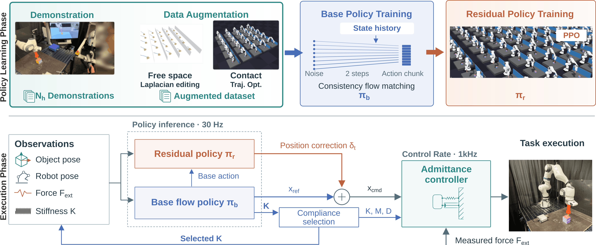

Results
static/videos/results.mp4
Abstract
Contact-rich manipulation requires a robot to be precise in free space to establish the intended contacts, and compliant once in contact to avoid excessive forces. Imitation learning has proven effective for simpler manipulation tasks, but the compliance underlying a demonstration is not directly observable and is therefore difficult to infer from demonstration data alone. We present a framework that makes compliance explicit at every stage. During data collection, the operator teleoperates the real robot while a synchronized digital twin visualizes the error between the commanded reference and the achieved pose, making the current compliance visible, and selects between two discrete compliance modes. To generalize across object poses, we combine Laplacian editing, which retargets trajectories efficiently but is not physics-consistent during contact, with simulation-based trajectory optimization, which enforces physical plausibility but offers no manual guidance. Finally, a residual reinforcement learning policy refines the interaction forces by adjusting the reference pose of the underlying admittance controller. We evaluate on three flipping and pushing tasks on a Franka FR3 based on a total of 7 demonstrations across tasks. Our method is successful on all 40 out-of-distribution trials, compared to 33/40 and 24/40 for two baselines, with our base policy alone reaching 35/40.
Method

static/img/method.png